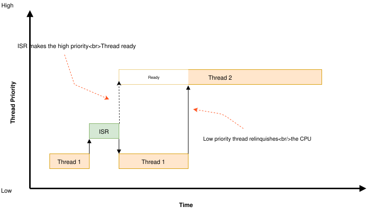
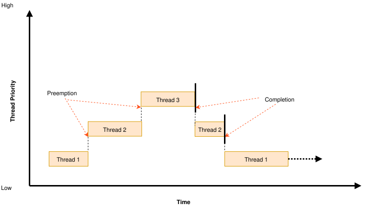
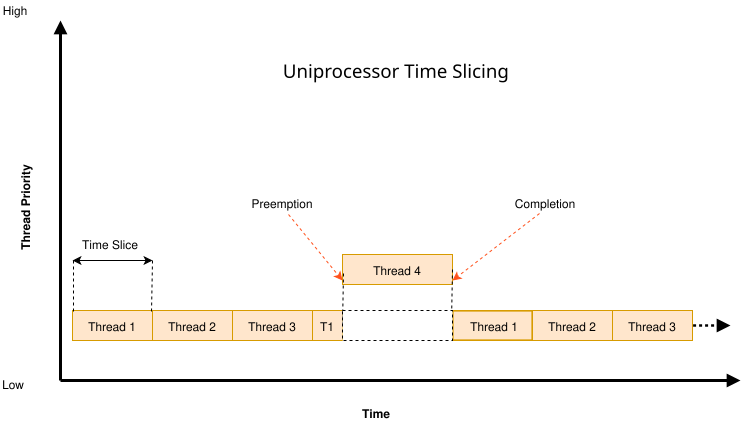

调度
内核基于优先级的调度器让应用程序的线程共享 CPU。
概念
调度器决定在任意时刻允许哪个线程执行，这个线程称为 当前线程。
在许多时间点上，调度器都有机会改变当前线程，也就是让 CPU 从执行一个线程切换为执行另一个线程。这些时间点称为 重新调度点。可能的重新调度点包括：
线程从运行状态转变为挂起或等待状态，例如通过
k_sem_take()或k_sleep()。线程转变为 就绪状态，例如通过
k_sem_give()或k_thread_start()处理完中断后返回线程上下文
正在运行的线程调用
k_yield()时
当线程主动发起一个使自身转变为挂起或等待状态的操作时，称该线程 睡眠。
每当调度器改变当前线程，或者当前线程的执行被 ISR 取代时，内核会首先保存当前线程的 CPU 寄存器值。之后该线程恢复执行时，这些寄存器值会被恢复。
调度算法
内核调度器选择优先级最高的就绪线程作为当前线程。当存在多个相同优先级的就绪线程时，调度器选择等待时间最长的那个。
线程的相对优先级主要由其静态优先级决定。但是，当启用了最早截止时间优先调度（CONFIG_SCHED_DEADLINE）且候选线程的静态优先级相同时，截止时间较早的线程被视为优先级较高。因此，启用最早截止时间优先调度时，只有静态优先级和截止时间都相同的两个线程才被视为优先级相同。例程 k_thread_deadline_set() 用于设置线程的截止时间。
备注
ISR 的执行优先于线程的执行，因此除非中断已被屏蔽，当前线程的执行随时可能被 ISR 取代。这同时适用于协作式线程和抢占式线程。
构建内核时，可以从几种就绪队列实现中选择一种，它们在代码大小、常数级运行时开销以及线程数量增多时的性能扩展性方面各有取舍。
简单链表就绪队列（
CONFIG_SCHED_SIMPLE）调度器就绪队列实现为一个简单的无序列表，对单个线程具有非常快的常数时间性能，代码量也非常小。在代码大小受限、且任何时刻队列中的可运行线程都不会超过少数几个（大概 3 个）的系统上，应选择这种实现。在大多数（没有在别处使用红黑树的）平台上，这可以节省约 2k 的代码量。
红黑树就绪队列（
CONFIG_SCHED_SCALABLE）调度器就绪队列实现为红黑树。它的常数时间插入和删除开销要慢不少，并且在大多数（没有在别处使用红黑树的）平台上需要额外约 2kb 的代码。其行为可以平滑、快速地扩展到成千上万个线程。
需要大量并发可运行线程（大约 20 个以上）的应用程序应使用这种实现。大多数应用程序不需要这种就绪队列实现。
传统多队列就绪队列（
CONFIG_SCHED_MULTIQ）选择这种实现时，调度器就绪队列实现为经典的、教科书式的链表数组，每个优先级一个链表。
这对应于 Zephyr 1.12 之前版本所使用的调度算法。
与“简单”调度器相比，它只增加很少的代码量，并且几乎在所有情况下都以 O(1) 时间运行，常数因子非常低。但它需要相当多的 RAM 来存储这些链表头，而且功能有限，因此与需要更精细地对线程排序的截止时间调度，以及需要遍历线程列表的 SMP 亲和性等功能不兼容。
可运行线程较少的典型应用程序可能更适合使用简单调度器。
IPC 原语中用于挂起线程以便稍后唤醒的 wait_q 抽象，与调度器共用同样的后端数据结构选择，也可以使用相同的选项。
可扩展 wait_q 实现（
CONFIG_WAITQ_SCALABLE）选择该实现时，wait_q 使用平衡树实现。如果预计会有很多线程在单个原语上等待，请选择它。如果应用程序的其他地方没有使用红黑树，它的代码量比
CONFIG_WAITQ_SIMPLE多约 2kb（这部分代码可与CONFIG_SCHED_SCALABLE共享），并且在“小”队列上的挂起/解除挂起操作会稍慢一些（不过这通常不在性能关键路径上）。简单链表 wait_q（
CONFIG_WAITQ_SIMPLE）选择该实现时，wait_q 使用双向链表实现。如果预计任何单个 IPC 原语上只会阻塞少数几个线程，请选择它。
协作式时间片
协作式线程一旦成为当前线程，就会一直保持为当前线程，直到它执行某个使自己变为非就绪的操作。因此，如果协作式线程执行冗长的计算，可能会给其他线程（包括更高优先级和相同优先级的线程）的调度带来不可接受的延迟。

为解决这类问题，协作式线程可以不时地主动让出 CPU，让其他线程得以执行。线程可以通过两种方式让出 CPU：
调用
k_yield()会把线程放到调度器按优先级排列的就绪线程列表的末尾，然后调用调度器。于是，在让出 CPU 的线程被重新调度之前，所有优先级高于或等于它的就绪线程都可以执行。如果不存在这样的就绪线程，调度器会立即重新调度该线程，不发生上下文切换。调用
k_sleep()会使线程在指定时间段内变为非就绪。这时 所有 优先级的就绪线程都可以执行；但是，不能保证优先级低于该睡眠线程的线程在它重新就绪之前真的会被调度。
抢占式时间片
抢占式线程一旦成为当前线程，就会一直保持为当前线程，直到有更高优先级的线程就绪，或者它执行某个使自己变为非就绪的操作。因此，如果抢占式线程执行冗长的计算，可能会给其他线程（包括相同优先级的线程）的调度带来不可接受的延迟。

为解决这类问题，抢占式线程可以执行协作式时间片（如上所述），也可以使用调度器的时间片功能，让相同优先级的其他线程得以执行。

备注
在 SMP 下，其行为与上面的 UP（单处理器）图示类似，只是线程 1 不会紧跟在线程 4 之后，而是线程 2、线程 3、线程 1、……。
调度器将每个 CPU 上的时间划分为一系列 时间片，时间片以系统时钟节拍为单位计量。时间片大小可以配置，并且可以在应用程序运行期间更改。调度一个新线程会重置时间片定时器。
在每个时间片结束时，调度器检查当前线程是否可抢占；如果可抢占，就代表该线程隐式调用 k_yield()。这样，相同优先级的其他就绪线程就有机会在当前线程再次被调度之前执行。如果没有其他相同优先级的线程就绪，当前线程继续作为当前线程。
优先级高于指定上限的线程不受抢占式时间片的约束，永远不会被相同优先级的线程抢占。这样应用程序就可以只在处理对时间不太敏感的低优先级线程时使用抢占式时间片。
备注
内核的时间片算法 不 保证一组相同优先级的线程获得均等的 CPU 时间，因为它并不测量线程实际执行了多长时间。但该算法 确实 保证线程在不被要求让出 CPU 的情况下，执行时间永远不会超过一个时间片。
按线程设置时间片
使用 k_sched_time_slice_set() 配置的时间片全局适用于所有处于或低于给定优先级的可抢占线程。启用 CONFIG_TIMESLICE_PER_THREAD 后，可以改用 k_thread_time_slice_set() 为单个线程设置专属的时间片。线程专属时间片优先于全局值，即使线程的优先级高于全局时间片上限也同样适用。
除了时间片时长（以节拍表示）之外，线程专属时间片还会注册一个回调，内核在时间片到期时调用它。该回调在中断上下文中运行，此时受影响的线程仍是当前线程；回调可以执行诸如调整该线程下一次执行的优先级或时间片、或将其挂起等操作。
调度器锁定
如果可抢占线程在执行关键操作时不希望被抢占，可以调用 k_sched_lock()，让调度器暂时把它当作协作式线程对待。这样可以防止其他线程在关键操作执行期间进行干扰。
关键操作完成后，该可抢占线程必须调用 k_sched_unlock()，恢复其正常的可抢占状态。
如果线程调用 k_sched_lock() 后执行了使自己变为非就绪的操作，调度器会把这个加锁的线程切换出去，让其他线程执行。当加锁的线程再次成为当前线程时，它仍保持不可抢占状态。
备注
对可抢占线程来说，锁定调度器比把自身优先级改为负值更高效地防止被抢占。
线程睡眠
线程可以调用 k_sleep()，将其处理推迟指定的时间段。线程睡眠期间会让出 CPU，让其他就绪线程执行。指定的延迟结束后，线程变为就绪，可以再次被调度。
睡眠中的线程可以被另一个线程使用 k_wakeup() 提前唤醒。有时可以利用这种技术，让第二个线程通知睡眠线程某件事已经发生，而 无需 线程定义信号量之类的内核同步对象。唤醒一个未在睡眠的线程是允许的，但没有任何效果。
忙等待
线程可以调用 k_busy_wait() 执行 busy wait（忙等待），将其处理推迟指定的时间段，而不 把 CPU 让给其他就绪线程。
当所需延迟太短，不值得让调度器从当前线程上下文切换到另一个线程再切换回来时，通常使用忙等待代替线程睡眠。
强制进行调度决策
线程可以调用 k_reschedule()，强制调度器在当前 CPU 上立即做出调度决策。从线程中调用（且中断未锁定）时，调度器立即运行；从 ISR 中调用时，该决策会推迟到 ISR 退出时进行。
与 k_yield() 不同，该例程不保证切换到相同或更高优先级的线程，它只是请求内核根据当前状态重新评估下一个应运行的线程。大多数应用程序都不需要这个例程。
查询可抢占性
如果代码的行为取决于它能否被抢占，可以使用 k_is_preempt_thread() 查询当前上下文。只有当调用者是线程（而不是 ISR）、线程优先级处于可抢占范围内、并且该线程没有锁定调度器时，它才返回非零值。
相关例程 k_can_yield() 报告当前上下文是否能够让出 CPU 或调用阻塞 API。在 ISR、内核启动前初始化阶段或空闲线程等无法让出 CPU 的上下文中，它返回 false。
建议用法
将协作式线程用于设备驱动和其他性能关键的工作。
使用协作式线程实现互斥，而无需互斥量之类的内核对象。
使用抢占式线程，使时间敏感的处理优先于时间不太敏感的处理。
配置选项
CPU 空闲
虽然通常由空闲线程负责，但在某些特殊应用中，线程可能需要让 CPU 进入空闲状态。
概念
让 CPU 空闲会使内核暂停所有操作，直到某个事件（通常是中断）唤醒 CPU。在常规系统中，这由空闲线程负责。但在一些资源受限的系统中，也可以由其他线程承担这项任务。
实现
让 CPU 空闲
让 CPU 空闲很简单：调用 k_cpu_idle() API。CPU 将停止执行指令，直到有事件发生。该函数通常会在循环中调用。注意，在某些架构上，k_cpu_idle() 返回时会无条件地取消中断屏蔽。
static k_sem my_sem;
void my_isr(void *unused)
{
k_sem_give(&my_sem);
}
int main(void)
{
k_sem_init(&my_sem, 0, 1);
/* wait for semaphore from ISR, then do related work */
for (;;) {
/* wait for ISR to trigger work to perform */
if (k_sem_take(&my_sem, K_NO_WAIT) == 0) {
/* ... do processing */
}
/* put CPU to sleep to save power */
k_cpu_idle();
}
}
以原子方式让 CPU 空闲
有时可能需要在让 CPU 空闲之前以原子方式完成一些工作。这种情况下应改用 k_cpu_atomic_idle()。
实际上，上一个示例中存在竞态条件：中断可能恰好发生在获取信号量、发现它不可用、再次让 CPU 空闲这几步之间。在某些系统上，这会使 CPU 一直空闲到 下一个 中断发生，而这个中断可能 永远 不会发生，从而导致系统彻底挂起。为防止这种情况，应当像本示例这样使用 k_cpu_atomic_idle()。
static k_sem my_sem;
void my_isr(void *unused)
{
k_sem_give(&my_sem);
}
int main(void)
{
k_sem_init(&my_sem, 0, 1);
for (;;) {
unsigned int key = irq_lock();
/*
* Wait for semaphore from ISR; if acquired, do related work, then
* go to next loop iteration (the semaphore might have been given
* again); else, make the CPU idle.
*/
if (k_sem_take(&my_sem, K_NO_WAIT) == 0) {
irq_unlock(key);
/* ... do processing */
} else {
/* put CPU to sleep to save power */
k_cpu_atomic_idle(key);
}
}
}
建议用法
当线程除了让 CPU 空闲以等待事件之外还需要做一些实际工作时，使用 k_cpu_atomic_idle()。参见上面的示例。
只有当线程仅负责让 CPU 空闲、不做任何实际工作时，才使用 k_cpu_idle()，如下例所示。
int main(void)
{
/* ... do some system/application initialization */
/* thread is only used for CPU idling from this point on */
for (;;) {
k_cpu_idle();
}
}
备注
除非绝对必要，否则不要使用这些 API。 在常规系统中，空闲线程负责电源管理，包括让 CPU 空闲。
API 参考
- cpu_idle_apis